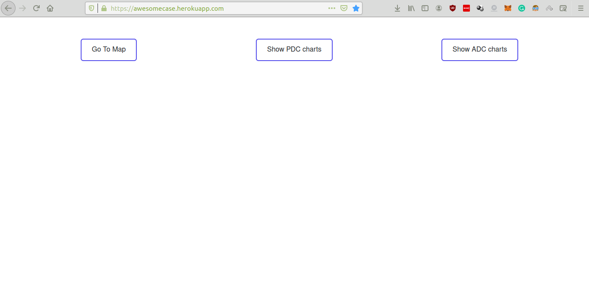
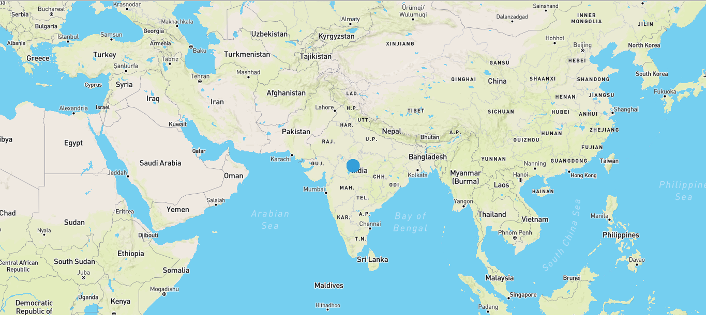
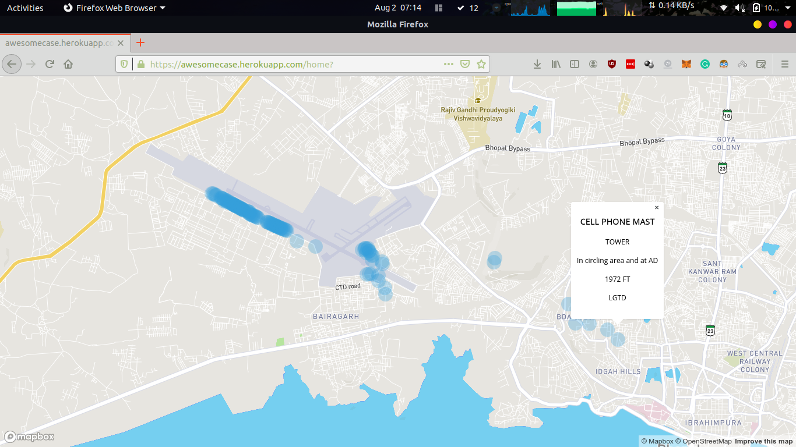
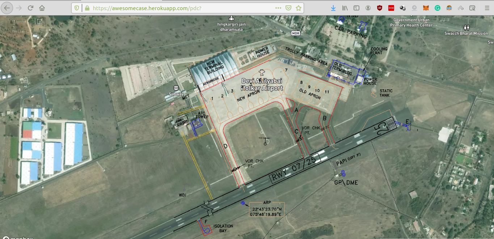

Aerial Dash
Welcome to Aerial Dashboard
This document will help you understanding to locate the aerodromes files
There are 3 tabs present on the website.
Obstacles
To view about the obstacles present in cities of Airports.
Please select "Go to Map"
It will show you street view of India with blue dots on it.

The map is showing only one point so that we can render the map quickly. Having multiple points in system will make application heavy.
Zooming-in to the map will provide more points and those points contains attributes associated with obstacles.
PDC
PDC stands for Aircraft Parking/Docking chart.
This chart is produced for those aerodromes where due to the complexity of the terminal facilities the information to facilitate the ground movement of aircraft between the taxiways and aircraft stands and parking / docking of aircraft cannot be shown with sufficient clarity on Aerodrome.
Our application has map out the important points which will help us to understand the aerodrome Parking/Docking area from satellite view.
You just need to select the city you want to look for its PDC chart
Go to home page[ click here], Select the tab PDC and navigate to indore airport to see the below image.
ADC
ADC stands for Aerodrome charts
Using Aerodrome charts and other tools, pilots are able to determine their position, safe altitude, best route to a destination, navigation aids along the way, alternative landing areas in case of an in-flight emergency, and other useful information such as radio frequencies and airspace boundaries.
Our application has map out the important points related to aerodrome and paste it out on satellite image using Airport Reference Point
You just need to select the city you want to look for its PDC chart
Go to home page[ click here], Select the tab ADC and navigate to indore airport to see the below image.

Credits
AwesomeCase would like to thank you Airport Authority of India to provide an opportunity to work on real life problems related. Under the response of all mentoring and evaulation session, this project finished as minimal viable product which is ready to deploy.